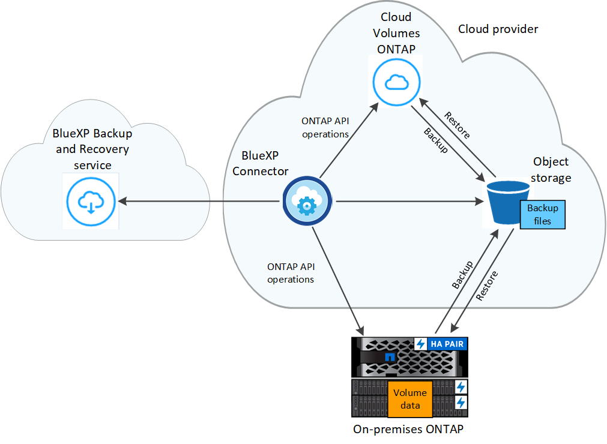

Amazon Web Services
Amazon Web Services
 Google Cloud
Google Cloud
 Microsoft Azure
Microsoft Azure
 Richiedi modifiche alla documentazione
Richiedi modifiche alla documentazione Modifica questa pagina
Modifica questa pagina Scopri come collaborare
Scopri come collaborareProteggi i dati del cluster ONTAP utilizzando il backup e ripristino BlueXP
Collaboratori
Il servizio di backup e ripristino BlueXP offre funzionalità di backup e ripristino per la protezione e l’archiviazione a lungo termine dei dati del cluster ONTAP. I backup vengono generati e memorizzati automaticamente in un archivio di oggetti nel tuo account di cloud pubblico o privato, indipendentemente dalle copie Snapshot del volume utilizzate per il ripristino o il cloning a breve termine.
Se necessario, è possibile ripristinare un intero volume, una cartella o uno o più file da un backup nello stesso ambiente di lavoro o in un ambiente di lavoro diverso.
Caratteristiche
Funzionalità di backup:
-
Eseguire il backup di copie indipendenti dei volumi di dati in uno storage a oggetti a basso costo.
-
Applicare una singola policy di backup a tutti i volumi di un cluster oppure assegnare policy di backup diverse a volumi che hanno obiettivi di punto di ripristino univoci.
-
Creare un criterio di backup da applicare a tutti i volumi futuri creati nel cluster.
-
Rendere i file di backup immutabili in modo che siano bloccati e protetti per il periodo di conservazione.
-
Esegui la scansione dei file di backup per individuare eventuali attacchi ransomware e rimuovi/sostituisci automaticamente i backup infetti.
-
Eseguire il Tier dei file di backup più vecchi sullo storage di archiviazione per risparmiare sui costi.
-
Eliminare la relazione di backup in modo da poter archiviare i volumi di origine non necessari mantenendo i backup dei volumi.
-
Backup dal cloud al cloud e dai sistemi on-premise al cloud pubblico o privato.
-
Per i sistemi Cloud Volumes ONTAP, i backup possono risiedere in un abbonamento/account diverso o in un’altra regione.
-
I dati di backup sono protetti con crittografia AES-256 bit a riposo e connessioni HTTPS TLS 1.2 in volo.
-
Utilizza le tue chiavi gestite dal cliente per la crittografia dei dati invece di utilizzare le chiavi di crittografia predefinite del tuo cloud provider.
-
Supporto di un massimo di 4,000 backup di un singolo volume.
Funzionalità di ripristino:
-
Ripristinare i dati da un momento specifico.
-
Ripristinare un volume, una cartella o singoli file nel sistema di origine o in un sistema diverso.
-
Ripristinare i dati in un ambiente di lavoro utilizzando un abbonamento/account diverso o che si trova in un’altra regione.
-
I dati vengono ripristinati a livello di blocco, posizionando i dati direttamente nella posizione specificata, il tutto mantenendo gli ACL originali.
-
Cataloghi di file esplorabili e ricercabili per una facile selezione di singole cartelle e file per un singolo ripristino dei file.
Ambienti di lavoro ONTAP supportati e provider di storage a oggetti
Il backup e ripristino BlueXP consente di eseguire il backup dei volumi ONTAP dai seguenti ambienti di lavoro allo storage a oggetti nei seguenti provider di cloud pubblico e privato:
| Ambiente di lavoro di origine | Destinazione del file di backup ifdef::aws[] |
|---|---|
Cloud Volumes ONTAP in AWS |
Amazon S3 endif::aws[] ifdef::Azure[] |
Cloud Volumes ONTAP in Azure |
Azure Blob endif::Azure[] ifdef::gcp[] |
Cloud Volumes ONTAP in Google |
Google Cloud Storage endif::gcp[] |
Sistema ONTAP on-premise |
Ifdef::aws[] Amazzonia S3 endif::aws[] ifdef::Azure[] Azure Blob endif::Azure[] ifdef::gcp[] Google Cloud Storage endif::gcp[] NetApp StorageGRID |
È possibile ripristinare un volume, una cartella o singoli file da un file di backup di ONTAP nei seguenti ambienti di lavoro:
| Percorso del file di backup | Ambiente di lavoro di destinazione ifdef::aws[] |
|---|---|
Amazon S3 |
Cloud Volumes ONTAP in AWS on-premise ONTAP system endif::aws[] ifdef::Azure[] |
Azure Blob |
Cloud Volumes ONTAP in Azure on-premise ONTAP system endif::Azure[] ifdef::gcp[] |
Storage Google Cloud |
Cloud Volumes ONTAP in Google on-premise ONTAP system endif::gcp[] |
NetApp StorageGRID |
Sistema ONTAP on-premise |
Si noti che i riferimenti ai "sistemi ONTAP on-premise" includono i sistemi FAS, AFF e ONTAP Select.
Supporto per siti con connettività limitata
Il backup e ripristino BlueXP può essere utilizzato in un sito con connettività Internet limitata (nota anche come "modalità limitata") per eseguire il backup e il ripristino dei dati del volume. In questo caso, è necessario implementare BlueXP Connector nell’area limitata.
-
Puoi eseguire il backup dei dati dai sistemi Cloud Volumes ONTAP installati nelle aree commerciali di AWS su Amazon S3. Vedere "Backup dei dati Cloud Volumes ONTAP su Amazon S3".
-
È possibile eseguire il backup dei dati dai sistemi Cloud Volumes ONTAP installati nelle aree commerciali di Azure su Azure Blob. Vedere "Backup dei dati Cloud Volumes ONTAP in Azure Blob".
Supporto per siti senza connessione a Internet
Il backup e il ripristino BlueXP possono essere utilizzati in un sito senza connettività Internet (noto anche come siti "privati" o "scuri") per eseguire il backup dei dati del volume. In questo caso, è necessario implementare BlueXP Connector in modalità privata.
-
È possibile eseguire il backup dei dati dai sistemi ONTAP locali on-premise ai sistemi NetApp StorageGRID locali. Vedere "Backup dei dati ONTAP on-premise su StorageGRID" per ulteriori informazioni. ifdef::aws[]
Volumi supportati
Il backup e ripristino di BlueXP supporta i seguenti tipi di volumi:
-
Volumi di lettura/scrittura FlexVol
-
Volumi di destinazione SnapMirror Data Protection (DP)
-
Volumi aziendali SnapLock (richiede ONTAP 9.11.1 o versione successiva)
-
I volumi di conformità SnapLock non sono attualmente supportati.
-
-
FlexGroup Volumes (richiede ONTAP 9.12.1 o versione successiva)
Vedere le sezioni a. Limitazioni di backup e ripristino per ulteriori requisiti e limitazioni.
Costo
Esistono due tipi di costi associati all’utilizzo del backup e ripristino BlueXP con i sistemi ONTAP: Costi delle risorse e costi del servizio.
Costi delle risorse
I costi delle risorse vengono pagati al cloud provider per la capacità dello storage a oggetti e per la scrittura e la lettura dei file di backup nel cloud.
-
Per il backup, pagherai il tuo cloud provider per i costi dello storage a oggetti.
Poiché il backup e ripristino BlueXP preserva l’efficienza dello storage del volume di origine, il cloud provider paga i costi dello storage a oggetti per l’efficienza dei dati dopo ONTAP (per la minore quantità di dati dopo l’applicazione della deduplica e della compressione).
-
Per il ripristino dei dati utilizzando Search & Restore, alcune risorse vengono fornite dal tuo cloud provider e il costo per TIB è associato alla quantità di dati sottoposti a scansione dalle tue richieste di ricerca. (Queste risorse non sono necessarie per Browse & Restore).
-
In AWS, "Amazon Athena" e. "Colla AWS" Le risorse vengono implementate in un nuovo bucket S3.
-
In Azure, An "Spazio di lavoro Azure Synapse" e. "Storage Azure Data Lake" vengono forniti nell’account storage per memorizzare e analizzare i dati.
-
-
In Google, viene implementato un nuovo bucket e "Servizi Google Cloud BigQuery" sono forniti a livello di account/progetto.
-
Se è necessario ripristinare i dati di un volume da un file di backup spostato nello storage di archiviazione, è prevista una tariffa aggiuntiva per il recupero per ogni GiB e per ogni richiesta da parte del cloud provider.
Costi di servizio
I costi di servizio vengono pagati a NetApp e coprono sia il costo per creare backup che per ripristinare volumi o file da tali backup. Paghi solo i dati che proteggi, calcolati in base alla capacità logica utilizzata di origine (before ONTAP Efficiencies) dei volumi ONTAP di cui viene eseguito il backup nello storage a oggetti. Questa capacità è nota anche come terabyte front-end (FETB).
Esistono tre modi per pagare il servizio di backup. La prima opzione è iscriversi al tuo cloud provider, che ti consente di pagare al mese. La seconda opzione consiste nell’ottenere un contratto annuale. La terza opzione consiste nell’acquistare le licenze direttamente da NetApp. Leggere il Licensing per ulteriori informazioni.
Licensing
Il backup e ripristino BlueXP è disponibile con i seguenti modelli di consumo:
-
BYOL: Licenza acquistata da NetApp e utilizzabile con qualsiasi cloud provider.
-
PAYGO: Un abbonamento orario dal mercato del tuo cloud provider.
-
Annuale: Un contratto annuale dal mercato del tuo cloud provider.

|
Se acquisti una licenza BYOL da NetApp, devi anche iscriverti all’offerta PAYGO dal mercato del tuo cloud provider. La tua licenza viene sempre addebitata per prima, ma ti verrà addebitato il costo della tariffa oraria sul mercato nei seguenti casi:
Se si dispone di un contratto annuale da un marketplace, tutti i consumi di backup e recovery di BlueXP vengono addebitati a fronte di tale contratto. Non puoi combinare un contratto di mercato annuale con un BYOL. |
Porta la tua licenza
BYOL è basato sui termini (12, 24 o 36 mesi) e sulla capacità in incrementi di 1 TIB. Pagherai NetApp per utilizzare il servizio per un periodo di tempo, ad esempio 1 anno, e per una capacità massima, ad esempio 10 TIB.
Riceverai un numero di serie che inserisci nella pagina del portafoglio digitale BlueXP per attivare il servizio. Una volta raggiunto il limite, è necessario rinnovare la licenza. La licenza BYOL di backup si applica a tutti i sistemi di origine associati al "Account BlueXP".
Abbonamento pay-as-you-go
Il backup e ripristino BlueXP offre licenze basate sui consumi in un modello pay-as-you-go. Dopo aver effettuato l’iscrizione tramite il marketplace del tuo cloud provider, pagherai per ogni GiB i dati di cui hai eseguito il backup, senza alcun pagamento anticipato. Il tuo cloud provider ti addebita la fattura mensile.
Ricorda che una prova gratuita di 30 giorni è disponibile quando ti iscrivi inizialmente con un abbonamento PAYGO.
Contratto annuale
Quando si utilizza AWS, sono disponibili due contratti annuali per 12, 24 o 36 mesi:
-
Un piano di "backup sul cloud" che consente di eseguire il backup dei dati Cloud Volumes ONTAP e dei dati ONTAP on-premise.
-
Un piano "CVO Professional" che consente di unire backup e ripristino di Cloud Volumes ONTAP e BlueXP. Questo include backup illimitati per volumi Cloud Volumes ONTAP addebitati a fronte di questa licenza (la capacità di backup non viene conteggiata rispetto alla licenza).
-
Quando si utilizza Azure, è possibile richiedere un’offerta privata da NetApp e selezionare il piano quando si effettua l’iscrizione da Azure Marketplace durante l’attivazione del backup e ripristino di BlueXP.
-
Quando si utilizza GCP, è possibile richiedere un’offerta privata da NetApp e selezionare il piano quando si effettua l’iscrizione da Google Cloud Marketplace durante l’attivazione del backup e ripristino BlueXP.
Come funziona il backup e ripristino di BlueXP
Quando si abilita il backup e ripristino BlueXP su un sistema Cloud Volumes ONTAP o ONTAP on-premise, il servizio esegue un backup completo dei dati. Le snapshot dei volumi non sono incluse nell’immagine di backup. Dopo il backup iniziale, tutti i backup aggiuntivi sono incrementali, il che significa che viene eseguito il backup solo dei blocchi modificati e dei nuovi blocchi. In questo modo il traffico di rete viene ridotto al minimo. Il backup e ripristino BlueXP si basa su "Tecnologia NetApp SnapMirror Cloud".

|
Qualsiasi azione intrapresa direttamente dall’ambiente del provider cloud per gestire o modificare i file di backup potrebbe corrompere i file e causare una configurazione non supportata. |
La seguente immagine mostra la relazione tra ciascun componente:

Dove risiedono i backup
Le copie di backup vengono memorizzate in un archivio di oggetti creato da BlueXP nel tuo account cloud. C’è un archivio di oggetti per cluster/ambiente di lavoro e BlueXP nomina l’archivio di oggetti come segue: "netapp-backup-clusteruid". Assicurarsi di non eliminare questo archivio di oggetti.
-
In AWS, BlueXP attiva "Funzione di accesso pubblico a blocchi Amazon S3" Sul bucket S3.
-
In Azure, BlueXP utilizza un gruppo di risorse nuovo o esistente con un account di storage per il container Blob. BlueXP "blocca l’accesso pubblico ai dati blob" per impostazione predefinita.
-
In GCP, BlueXP utilizza un progetto nuovo o esistente con un account di storage per il bucket di Google Cloud Storage.
-
In StorageGRID, BlueXP utilizza un account di storage esistente per il bucket dell’archivio di oggetti.
Se si desidera modificare l’archivio di oggetti di destinazione per un cluster in futuro, è necessario "Annullare la registrazione del backup e ripristino BlueXP per l’ambiente di lavoro", Quindi abilitare il backup e il ripristino BlueXP utilizzando le informazioni del nuovo provider di cloud.
Pianificazione di backup e impostazioni di conservazione personalizzabili
Quando si attiva il backup e il ripristino BlueXP per un ambiente di lavoro, tutti i volumi selezionati inizialmente vengono sottoposti a backup utilizzando il criterio di backup predefinito definito dall’utente. Se si desidera assegnare criteri di backup diversi a determinati volumi con obiettivi RPO (Recovery Point Objective) diversi, è possibile creare criteri aggiuntivi per tale cluster e assegnare tali criteri agli altri volumi dopo l’attivazione del backup e ripristino di BlueXP.
È possibile scegliere una combinazione di backup orari, giornalieri, settimanali, mensili e annuali di tutti i volumi. Il criterio Snapshot applicato al volume deve essere uno dei criteri riconosciuti dal backup BlueXP e i file di ripristino o di backup non verranno creati. È inoltre possibile selezionare una delle policy definite dal sistema che fornisce backup e conservazione per 3 mesi, 1 anno e 7 anni. Queste policy sono:
| Nome policy di backup | Backup per intervallo… | Max. Backup | ||
|---|---|---|---|---|
Giornaliero |
Settimanale |
Mensile |
||
Netapp3MonthsRetention |
30 |
13 |
3 |
46 |
Netapp1YearRetention |
30 |
13 |
12 |
55 |
Netapp7YearsRetention |
30 |
53 |
84 |
167 |
Le policy di protezione del backup create sul cluster utilizzando Gestione di sistema di ONTAP o l’interfaccia utente di ONTAP verranno visualizzate come selezioni. Sono inclusi i criteri creati utilizzando etichette SnapMirror personalizzate.
Una volta raggiunto il numero massimo di backup per una categoria o intervallo, i backup meno recenti vengono rimossi in modo da avere sempre i backup più recenti (e quindi i backup obsoleti non continuano a occupare spazio nel cloud).
Vedere "Pianificazioni di backup" per ulteriori informazioni sulle opzioni di pianificazione disponibili.
Nota: È possibile "creare un backup on-demand di un volume" Dalla dashboard di backup in qualsiasi momento, oltre ai file di backup creati dai backup pianificati.

|
Il periodo di conservazione per i backup dei volumi di protezione dei dati è lo stesso definito nella relazione SnapMirror di origine. È possibile modificare questa impostazione utilizzando l’API. |
Impostazioni di protezione del file di backup
Se il cluster utilizza ONTAP 9.11.1 o versione successiva, è possibile proteggere i backup da attacchi ransomware e di eliminazione. Ogni policy di backup fornisce una sezione per DataLock e ransomware Protection che può essere applicata ai file di backup per un periodo di tempo specifico, il periodo di conservazione. DataLock protegge i file di backup da modifiche o eliminazioni. Ransomware Protection esegue la scansione dei file di backup per cercare la prova di un attacco ransomware quando viene creato un file di backup e quando vengono ripristinati i dati di un file di backup.
Il periodo di conservazione del backup è lo stesso del periodo di conservazione della pianificazione del backup, più 14 giorni. Ad esempio, i backup settimanali con 5 copie conservate bloccano ogni file di backup per 5 settimane. I backup mensili con 6 copie conservate bloccano ogni file di backup per 6 mesi.
Il supporto è attualmente disponibile quando la destinazione del backup è Amazon S3, Azure Blob o NetApp StorageGRID. Le destinazioni di altri provider di storage verranno aggiunte nelle versioni future.
Vedere "Protezione DataLock e ransomware" Per ulteriori informazioni sul funzionamento della protezione DataLock e ransomware.
|
|
Non è possibile attivare DataLock se si stanno eseguendo il tiering dei backup nello storage di archiviazione. |
Storage di archiviazione per file di backup meno recenti
Quando si utilizza un determinato cloud storage, è possibile spostare i file di backup meno recenti su un livello di accesso/classe di storage meno costoso dopo un certo numero di giorni. Nota: Non è possibile utilizzare lo storage di archiviazione se è stato attivato DataLock.
-
In AWS, i backup iniziano nella classe di storage Standard e passano alla classe di storage Standard-infrequent Access dopo 30 giorni.
Se il cluster utilizza ONTAP 9.10.1 o versione successiva, è possibile scegliere di raggruppare i backup più vecchi in uno storage S3 Glacier o S3 Glacier Deep Archive nell’interfaccia utente di backup e ripristino BlueXP dopo un certo numero di giorni per un’ulteriore ottimizzazione dei costi. "Scopri di più sullo storage di archiviazione AWS".
-
In Azure, i backup sono associati al Tier di accesso Cool.
Se il cluster utilizza ONTAP 9.10.1 o versione successiva, è possibile scegliere di raggruppare i backup meno recenti in storage Azure Archive nell’interfaccia utente di backup e ripristino di BlueXP dopo un certo numero di giorni per un’ulteriore ottimizzazione dei costi. "Scopri di più sullo storage di archivio Azure".
-
In GCP, i backup sono associati alla classe di storage Standard.
Se il cluster utilizza ONTAP 9.12.1 o versione successiva, è possibile scegliere di raggruppare i backup meno recenti in storage Archive nell’interfaccia utente di backup e ripristino BlueXP dopo un certo numero di giorni per un’ulteriore ottimizzazione dei costi. "Scopri di più sullo storage di archivio di Google".
-
In StorageGRID, i backup sono associati alla classe di storage Standard.
Se il cluster on-premise utilizza ONTAP 9.12.1 o versione successiva e il sistema StorageGRID utilizza 11.4 o versione successiva, è possibile archiviare i file di backup meno recenti nello storage di archiviazione del cloud pubblico dopo un certo numero di giorni. Attualmente il supporto è per i Tier di storage AWS S3 Glacier/S3 Glacier Deep Archive o Azure Archive. "Scopri di più sull’archiviazione dei file di backup da StorageGRID".
Vedere "Impostazioni dello storage di archiviazione" per ulteriori informazioni sull’archiviazione dei file di backup meno recenti.
Considerazioni sui criteri di tiering FabricPool
È necessario tenere presente che il volume di cui si esegue il backup risiede in un aggregato FabricPool e dispone di una policy assegnata diversa da none:
-
Il primo backup di un volume a livelli FabricPool richiede la lettura di tutti i dati locali e tutti i dati a livelli (dall’archivio di oggetti). Un’operazione di backup non "riscalda" i dati cold a più livelli nello storage a oggetti.
Questa operazione potrebbe causare un aumento dei costi una tantum per la lettura dei dati dal tuo cloud provider.
-
I backup successivi sono incrementali e non hanno questo effetto.
-
Se il criterio di tiering viene assegnato al volume al momento della sua creazione iniziale, il problema non viene visualizzato.
-
-
Considerare l’impatto dei backup prima di assegnare
allpolicy di tiering sui volumi. Poiché i dati vengono immediatamente suddivisi in più livelli, il backup e ripristino BlueXP legge i dati dal livello cloud piuttosto che dal livello locale. Poiché le operazioni di backup simultanee condividono il collegamento di rete con l’archivio di oggetti cloud, potrebbe verificarsi un peggioramento delle performance se le risorse di rete diventano saturate. In questo caso, è possibile configurare in modo proattivo più interfacce di rete (LIFF) per ridurre questo tipo di saturazione di rete.
Limitazioni
Limitazioni del backup
-
Quando si crea o modifica un criterio di backup quando non sono assegnati volumi al criterio, il numero di backup conservati può essere massimo di 1018. Dopo aver assegnato i volumi al criterio, è possibile modificare il criterio per creare fino a 4000 backup.
-
Quando si esegue il backup dei volumi di protezione dei dati (DP):
-
Relazioni con le etichette SnapMirror
app_consistente.all_source_snapshotnon verrà eseguito il backup nel cloud. -
Se si creano copie locali di Snapshot sul volume di destinazione di SnapMirror (indipendentemente dalle etichette di SnapMirror utilizzate), queste istantanee non verranno spostate nel cloud come backup. A questo punto, è necessario creare una policy Snapshot con le etichette desiderate nel volume DP di origine per eseguire il backup di BlueXP e il ripristino.
-
-
I backup dei volumi FlexGroup non possono essere spostati nello storage di archiviazione.
-
I backup dei volumi FlexGroup non possono utilizzare la protezione DataLock e ransomware.
-
Il backup del volume SVM-DR è supportato con le seguenti restrizioni:
-
I backup sono supportati solo dal secondario ONTAP.
-
Il criterio Snapshot applicato al volume deve essere uno dei criteri riconosciuti dal backup e ripristino BlueXP, inclusi quelli giornalieri, settimanali, mensili e così via Il criterio predefinito "SM_created" (utilizzato per Mirror All Snapshots) non viene riconosciuto e il volume DP non viene visualizzato nell’elenco dei volumi di cui è possibile eseguire il backup.
-
-
Supporto MetroCluster:
-
Quando si utilizza ONTAP 9.12.1 GA o superiore, il backup è supportato quando si è connessi al sistema primario. L’intera configurazione di backup viene trasferita al sistema secondario in modo che i backup nel cloud continuino automaticamente dopo lo switchover. Non è necessario configurare il backup sul sistema secondario (in realtà, non è necessario farlo).
-
Quando si utilizza ONTAP 9.12.0 e versioni precedenti, il backup è supportato solo dal sistema secondario ONTAP.
-
Al momento non sono supportati i backup dei volumi FlexGroup.
-
-
Il backup del volume ad-hoc con il pulsante Backup Now non è supportato sui volumi di protezione dei dati.
-
Le configurazioni SM-BC non sono supportate.
-
ONTAP non supporta la fan-out delle relazioni di SnapMirror da un singolo volume a più archivi di oggetti; pertanto, questa configurazione non è supportata dal backup e ripristino di BlueXP.
-
La modalità WORM/Compliance in un archivio di oggetti è attualmente supportata su Amazon S3, Azure e StorageGRID. Questa funzione è nota come funzionalità DataLock e deve essere gestita utilizzando le impostazioni di backup e ripristino di BlueXP e non l’interfaccia del provider cloud.
Ripristinare le limitazioni
Queste limitazioni si applicano sia ai metodi Search & Restore che Browse & Restore per il ripristino di file e cartelle, a meno che non venga espressamente indicato.
-
Browse & Restore consente di ripristinare fino a 100 singoli file alla volta.
-
Search & Restore può ripristinare 1 file alla volta.
-
Quando si utilizza ONTAP 9.13.0 o versione successiva, Sfoglia e ripristina e Cerca e ripristina una cartella con tutti i file e le sottocartelle al suo interno.
Quando si utilizza una versione di ONTAP superiore alla 9.11.1 ma precedente alla 9.13.0, l’operazione di ripristino consente di ripristinare solo la cartella selezionata e i file contenuti in tale cartella, senza ripristinare le sottocartelle o i file contenuti nelle sottocartelle.
Quando si utilizza una versione di ONTAP precedente alla 9.11.1, il ripristino delle cartelle non è supportato.
-
Il ripristino di directory/cartelle è supportato per i dati che risiedono nello storage di archiviazione solo quando il cluster esegue ONTAP 9.13.1 e versioni successive.
-
Il ripristino di directory/cartelle è supportato per i dati protetti mediante DataLock solo quando il cluster esegue ONTAP 9.13.1 e versioni successive.
-
Il ripristino di directory/cartelle non è attualmente supportato sui backup dei volumi FlexGroup.
-
Il ripristino da volumi FlexGroup a volumi FlexVol o da volumi FlexVol a volumi FlexGroup non è supportato.
-
Il file da ripristinare deve utilizzare la stessa lingua del volume di destinazione. Se le lingue non sono uguali, viene visualizzato un messaggio di errore.
-
La priorità di ripristino alta non è supportata quando si ripristinano i dati dallo storage di archivio Azure ai sistemi StorageGRID.